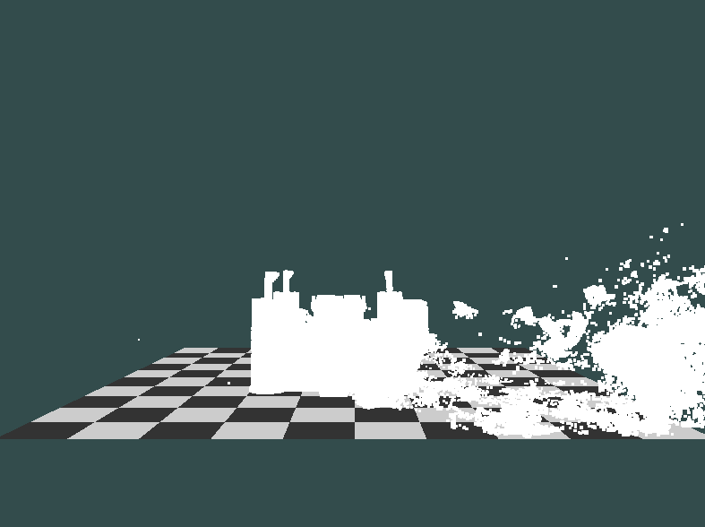

Studying
In order to do this project, we have to conquer two main problems, simulation and rendering.
In the simulation, we start from the following two papers:
- Multi-species simulation of porous sand and water mixtures
- A material point method for snow simulation
These two papers are based on the MPM method, adding more restrictions to create better effect. They provide some useful parameters we can reference. Although we produce the different results with the same configuration, these two papers still let us have good understanding how to tune the parameters.
Modeling
Simulating using material point method
Viewing real-time result with OpenGL
For real-time result viewing, we use OpenGL to create a simple scene, and provide several camera views from differnet angles. Then, we bind the vertex buffer to CUDA, so that we can just use the normal OpenGL function to render the MPM particles easily.
We use this scene to check if the simulation is doing well. After we get a satisfying result, we save the particle positions of each frame for OptiX™ Ray Tracing Engine.
Voxelizing and ray tracing
From saved particle positions, we load point cloud, voxelize it, and render voxels. GVDB-Voxels library is used for rendering of sparse volumetric data. Integrating with NVIDIA OptiX, it produces high quality ray-tracing result. After all point cloud data are rendered, the saved images of each frame can be combined as video.
Generating video
We use FFmpeg to combine all the images into one video. For example, we save every frame in PNG format, and use the following command to generate video. We can also specify how many images being displayed in one second (fps).
ffmpeg -r [fps] -pattern_type glob -i '*.png' -c:v libx264 -vf "format=yuv420p" [video name].mp4